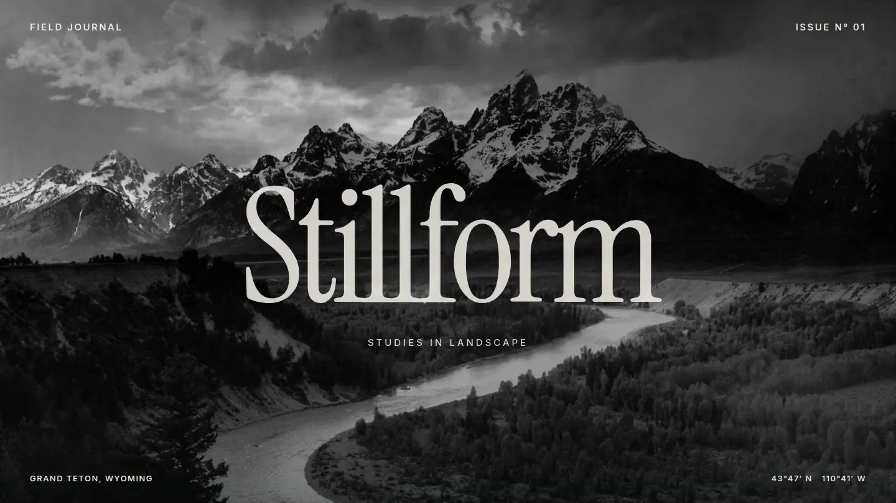
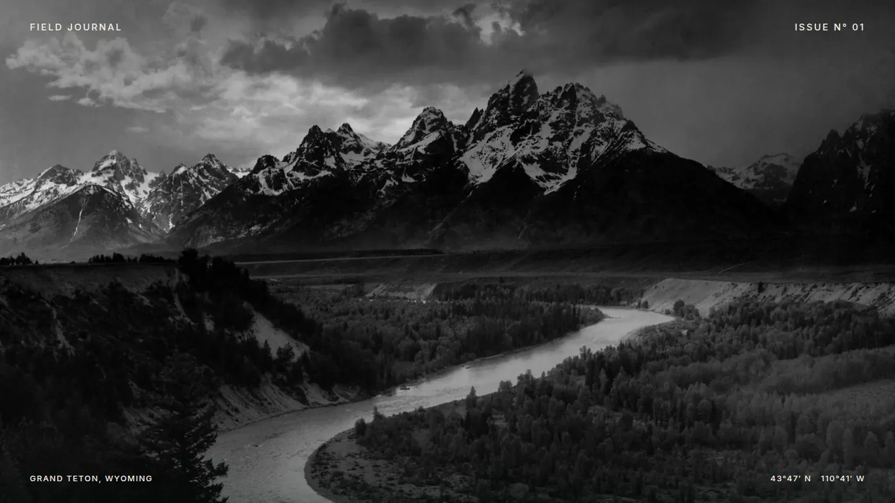

Free desktop app · macOS · Windows · Linux
You have the eye.Now you have the hands.
OpenMotionStudio is an open-source studio for making motion video with an AI agent. Describe the film, point at what to change on the picture, and export an MP4.
Works with Claude, GPT and local models, or the Claude Code and Codex you already use. Apache-2.0, no account.
Tour · 1:33
One film, start to finish.
A photograph becomes a seven-second magazine cover: open the project, brief Codex, mark the title, compare the cuts and export. Waits for the agent and the export are shortened.
Looks
Start from someone’s taste.
A look on MotionHub is a designer’s rules, type, colour and components. The agent draws with them. Here one brief, “A study in motion,” made in the Studio with three looks.
Studies made in OpenMotionStudio from SuoSi’s looks. CC BY 4.0 descriptions · MIT components.


Versions
Change one thing. Keep the rest.
Your film is a project, not a take. A note on the picture becomes one edit, kept as a version on your disk. Same frame, every render.
- v1
First cut, from the brief
title enters at 0.08 s -
v2
“Let the photograph breathe. Bring the title in half a second later.”
title enters at 0.58 s · nothing else moved
The Tetons—Snake River (1942), Ansel Adams. Public domain, held by the U.S. National Archives. Stillform is a fictional magazine made for this film.
Credits
Yours.
No account, no credits, no server of ours between you and your film.
- Directed by
- You
- Animated by
- An agent on the model you chooseAnthropic, OpenAI-compatible, a local model, or the Claude Code or Codex you already use
- Looks by
- Designers on MotionHub
- Footage
- Yours, including clips you generated elsewhere
- Voice
- The voice provider you pickwith captions timed to every line
- Filed in
- A folder on your disk
- Keys kept in
- Your system’s keychain
- Engine & export
- Included. Nothing else to install
- Licence
- Apache-2.0
Where it fits
Make footage anywhere. Make the film here.
Makes footage, a new take each time. Bring the clips in as shots; the Studio sets the type, timing and brand around them.
Engines for people who write code. MotionHub looks work in both, and the Studio exports a Remotion project when you need one.
For directing. You look, point and decide; the agent writes the film and checks its own frames.
For developers
A film is film.tsx: scenes, layers and media drawn over time with
@motionhub/runtime, which the Studio plays and exports itself.
Read the documentation
git clone --branch v0.1.1 https://github.com/motionhub-dev/open-motion-studio
cd open-motion-studio
corepack enable
pnpm install --frozen-lockfile
pnpm devv0.1.1 · desktop
Roll.
Open a sample film, point at something, and watch it change. Connect your model when you are ready.
Release notes, archives and checksums · Using v0.1.0? Install this release once to receive update notifications.
Windows releases: free code signing provided by SignPath.io, certificate by SignPath Foundation · Code signing policy